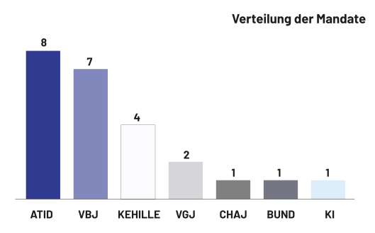
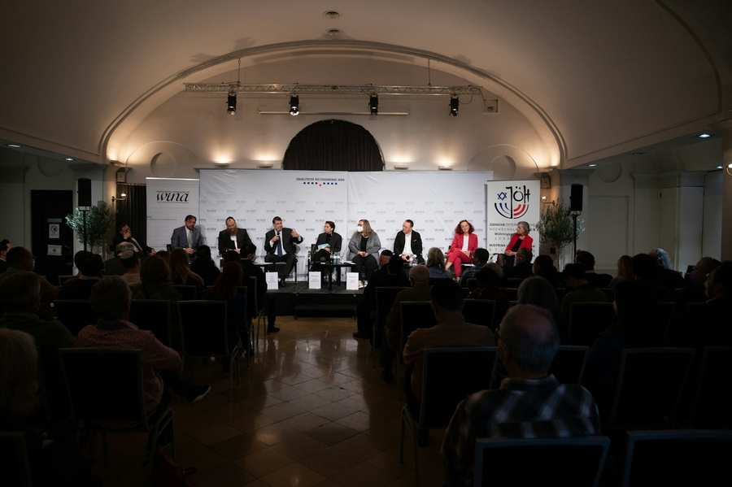

IKG/Schmidl
Am 17., 22. und 27. November waren alle wahlberechtigten Mitglieder der Israelitischen Kultusgemeinde Wien zur Wahl des Kultusvorstands aufgerufen. Nach vollständiger Auszählung der Stimmen, ergibt sich folgendes vorläufiges Ergebnis:
Wahlberechtigte Mitglieder: 5490
Abgegebene Stimmen: 3320
Gültige Stimmen: 3308
Wahlbeteiligung: 60,47%
Die Stimmen verteilen sich auf die Parteien wie folgt:

ATID - TEAM OSKAR DEUTSCH
1026 das sind 31,02%. Damit erhält die Partei 8 Mandate.
2017 erhielt die Partei 31,57% bzw. 8 Mandate.
VBJ SEFARDIM
870 das sind 26,30%. Damit erhält die Partei 7 Mandate.
2017 erhielt die Partei 27,06% bzw. 6 Mandate.
KEHILLE - TEAM YAACOV FRENKEL
558 das sind 16,87%. Damit erhält die Partei 4 Mandate.
2017 erhielt die Partei 11,68% bzw. 3 Mandate.
VGJ - VEREIN GEORGISCHER JUDEN
232 das sind 7,01%. Damit erhält die Partei 2 Mandate.
2017 erhielt die Partei 8,04% bzw. 2 Mandate.
CHAJ - JÜDISCHES LEBEN
222 das sind 6,71%. Damit erhält die Partei 1 Mandat.
2017 erhielt die Partei 8,04% bzw. 2 Mandate.
BUND SOZIALDEMOKRATISCHER JUDEN - AVODA
206 das sind 6,23%. Damit erhält die Partei 1 Mandat.
2017 erhielt die Partei 6,14% bzw. 1 Mandat.
KHAL ISRAEL
194 das sind 5,86%. Damit erhält die Partei 1 Mandat.
2017 erhielt die Partei 7,47% bzw. 2 Mandate.
WER ist wahlberechtigt?
Das aktive Wahlrecht haben gemäß § 164 des Statutes alle Gemeindemitglieder, die wenigstens sechs Monate eingeschriebene Mitglieder der Kultusgemeinde sind, mit dem Ablauf des ersten Alternativwahltages das 18. Lebensjahr vollendet und zum Tag der Wahlausschreibung bereits für wenigstens zwei Jahre im Sprengel der Kultusgemeinde (das ist in Wien, Niederösterreich, Burgenland, Steiermark oder Kärnten) ihren Hauptwohnsitz haben.
Auf Personen, die am 13. März 1938 Mitglieder einer im Sprengel gemäß § 1 bestehenden Kultusgemeinde waren, sind die Fristen des § 164 nicht anzuwenden.
Wahlwerbende Parteien 2022
Geordnet nach der Anzahl der Stimmen in der letzten Wahl zum Kultusvorstand sind dies:
- ATID - TEAM OSKAR DEUTSCH
- VBJ SEFARDIM
- KEHILLE - TEAM YAACOV FRENKEL
- CHAJ - JÜDISCHES LEBEN
- VGJ - VEREIN GEORGISCHER JUDEN
- KHAL ISRAEL
- BUND SOZIALDEMOKRATISCHER JUDEN - AVODA
Koppelungen
Im Sinne des §183 des Statuts der Israelitischen Kultusgemeinde schließen nachfolgende wahlwerbende Listen eine Koppelungsvereinbarung:
ATID-Team Oskar Deutsch, VBJ - Sefardim, Kehille - Team Yaacov Frenkel, VGJ - Verein Georgischer Juden, Khal Israel, Bund sozialdemokratischer Juden – AVODA
Jede wahlwerbende Liste kann sich mit anderen Listen verbinden, was vor der Wahl verlautbart wird. Dies hat bei der Mandatsvergabe zur Folge, dass die gekoppelten Listen nach Bestimmung der Wahlzahl bei der Mandatsverteilung als Einheit betrachtet werden und dadurch die Anzahl der nicht berücksichtigten Reststimmen möglichst gering gehalten wird. Innerhalb der Koppelung wird in einem weiteren Schritt eine eigene Wahlzahl ermittelt anhand derer die der Koppelung zustehende Mandate auf die Listen verteilt werden.
Podiumsdiskussion anlässlich der IKG-Wahlen 2022
Am 15. November, um 18:30 fand die Podiumsdiskussion anlässlich der IKG-Wahlen 2022, organisiert von WINA zusammen mit der Jüdischen österreichischen Hochschüler:innenschaft (JöH), statt. Wir danken allen für die rege Teilnahme und den lebendigen Austausch.

Fristen für die Wahlen 2022
| Frist laut Statut | Beschreibung | Datum |
| 12.09.2022 | Rechtzeitige Bekanntgabe der Wahltage, sowie der Einsichtsmöglichkeit in die Wählerliste, sowie der Frist zur Einbringung der Beschwerden in der Zeitschrift "Die Gemeinde-Insider"; Ausschreibungstag und Stichtag anführen, Info an Magistrat der Stadt Wien über erfolgte Ausschreibung § 172 | Spätestens 9 Wochen vor dem Hauptwahltag |
| 16.09.2022 | Auflegen der Wählerliste, Anschlag an Kundmachungstafel = Stichtag für die Wahlberechtigung § 173 | 1 Woche nach der Wahlausschreibung |
| 19.09.2022 | Frühester Termin zur Abgabe von Wahlvorschlägen § 178 | Frühestens 3 Tage nach Aufliegen der Wählerlisten |
| 23.09.2022 | Frist zur Einbringung von Beschwerden gegen die Wählerliste §174 | Innerhalb 8 Tagen ab Stichtag 23.09.2022 |
| 14.10.2022 | Spätester Termin zur Abgabe von Wahlvorschlägen § 178 | Spätestens 6 Wochen vor dem Hauptwahltag |
| 3 Tage | Frist zur Entscheidung über Beschwerden § 175 | |
| 3 Tage | Ende der Prüfungsfrist der Wahlvorschläge § 182 | |
| 3 Tage | Frist zur Berufung § 175 | |
| 3 Tage | Frist zur Entscheidung über Berufung § 175 | |
| 24.10.2022 | Letzter Tag zur Beseitigung von Mängeln, welche vom Präsidenten innerhalb der Prüfungsfrist anerkannt wurden § 182 | 5 Tage ab Bemängelung |
| 08.11.2022 | Frist zur Bekanntgabe der Koppelungen §183 | Spätestens 19 Tage vor dem Hauptwahltag |
| 09.11.2022 | Frist für Vorschläge für die Zusammensetzung der einzelnen Wahlkommissionen § 192 | Spätestens 18 Tage vor dem Hauptwahltag |
| 11.11.2022 | Kundmachung mittels persönlicher Zuschrift (Zusendung der Wahllegitimationen) an alle Wahlberechtigte §191 | Spätestens 14 Tage vor dem Hauptwahltag |
| 11.11.2022 | Kundmachung der Wahlvorschläge und allfälliger Koppelungen, im „Gemeinde-Insider“ und auf der Website, §184 | Spätestens 14 Tage vor dem Hauptwahltag |
| 11.11.2022 | Letzter Tag für Änderungen in der Wählerliste § 177 | Spätestens 14 Tage vor dem Hauptwahltag |
| 17.11.2022 | 1. Alternativwahltag § 163 | Stichtag für Wahlalter |
| 22.11.2022 | 2. Alternativwahltag § 163 | |
| 27.11.2022 | Hauptwahltag | |
| 05.12.2022 | Einwendungen gegen die Wahl § 218 | Binnen von 8 Tagen nach dem Wahltag |
| 4 Wochen | Entscheidungsfrist bei Einwendungen § 219 | Bis zu 4 Wochen |
| 8 Tage ab Zustellung | Beschwerde gg. Entscheidungen des KV betreffend Agnoszierung bzw. Annulierung der Wahl bzw. Einwendungen ab Zustellung §225 | 8 Tage ab Zustellung der Verständigung |
| 8 Tage | Annahmeerklärung der Wahl durch die Gewählten § 221 | 8 Tage ab Zustellung der Verständigung |
| 23.01.2023 oder früher | Jedenfalls letzter Tag zur Einberufung des neuen Kultusvorstandes § 227 | 9 Tage nach erfolgter Neuwahl des Kultusvorstandes, dh sobald alle Gewählten feststehen, keine Rechtsmittel mehr möglich sind und alle Gewählten ihre Wahl akzeptiert haben |
| Kundmachung des Wahlergebnisses ist in „Die Gemeinde-Insider“ und auf der Website der IKG Wien, sowie beim Magistrat und beim zuständigen Bundesminister anzuzeigen. §223 |